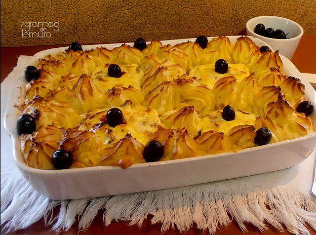

Bacalhau à Zé do Pipo

Description
A classic Portuguese comfort dish: tender cod, creamy mashed potatoes, sweet onions, olive oil, and a lightly
baked mayonnaise topping.
Ingredients:
- 600 g salted cod (bacalhau), soaked and desalted
- 1 bay leaf
- 1 small onion (for boiling)
- 1 kg potatoes, peeled
- 50 ml milk (approx.)
- 30 g butter
- Salt & white pepper, to taste
- Nutmeg (optional)
- 2 large onions, thinly sliced
- 150 ml extra-virgin olive oil
- 2 cloves garlic, minced
- 1 bay leaf
- 200–250 g mayonnaise (homemade or good-quality store-bought)
- Optional: black olives for garnish
Home